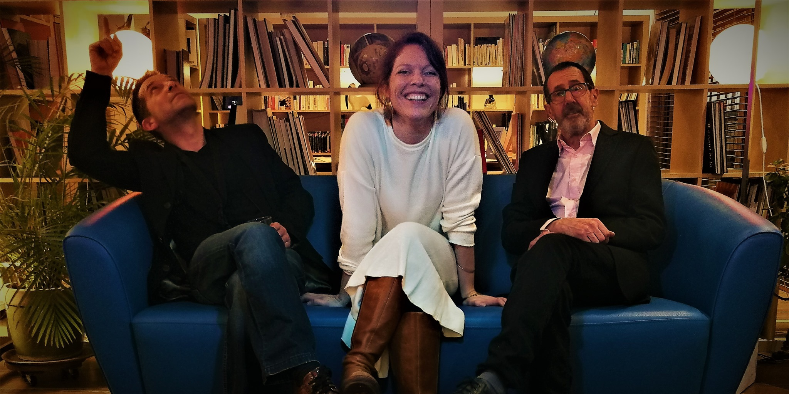
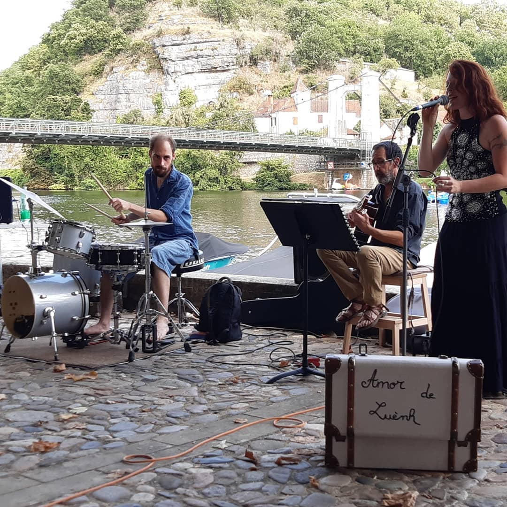
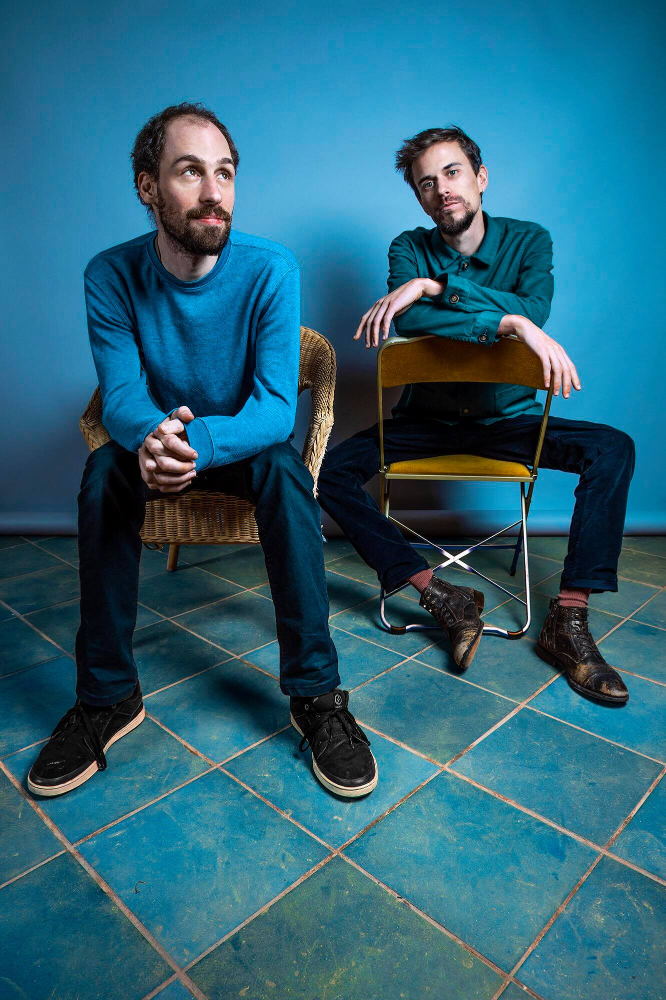

Evennements à venir

Jam sesion de noël animée par Amor de Luèn :
Durant les vacances de Noël 2021, l'association vous propose de se retrouver autour d'un verre de vin chaud et des instruments pour une jam session débridé ou tout le monde est le bienvenue.
Bonne humeur et ouverture d'esprit de rigueur !
Date précise à venir très bientôt
Panam-Cajarc-Express parisian Tour
Les compère du Panam-Cajarc-Express auront le plaisir de se retourver une fois de plus pour une tournée dans la région Ile de France comportant des concerts et une live session !
1er concert le 7 décembre au "Petit Balcon", le reste des dates arrive bientôt !
Evennements passés

les mercredi du bord'du :
Tous les mercredis de l'été, vous avez été nombreux a venir profité d'un apéritif et d'un repas au bord du lot accompagné par la musique d'Amor de Luènh

Duology Experiment :
Ce groupe composé de deux jeunes musiciens sont venus défendre leur approche si particulière de la musique. En effet composé uniquement d'une guitare et d'une batterie, ils vous ont fait voyagé dans le cosmos inter-sidéral par le biais leur nappes sonores
Tournée du Panam-Cajar-Express :
Composé de musiciens de la capitale et de musiciens locaux, ce groupe vous à emmené a travers des contrées sans frontière et sans compromis
Résumé des Stages précédents
Depuis 2017, l'association s'évertue à organiser son "Stage Musical Du Lot" envers et contre tout !
C'est ainsi que, grace à ses divers partenariats avec les municipalitées et son nombre d'élèves croissant, le stage continue de progresser chaques années. Nous avons donc pu cette année recruter un nouveau professeur, en la personne de Benjamin Aubry, pour dispensé des cours de Saxophone.
De plus, si nous profitions de l'ancienne école de musique de Cajarc, celle-ci aura désormais été remplacé par une nouvelle école flambant neuve et équipé comme il se doit.
Vivement l'année prochaine !!!